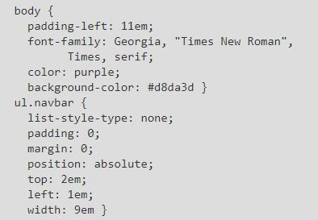

-
Estilo interno
El estilo interno es el que aplicamos en el mismo código de la pagina web que estamos creando, se usa el } elemento Style dentro de Head, desde aquí es donde generamos las reglas para crear el estilo de nuestra pagina web

-
Estilo externo
Para este se crea una hoja de estilo completa y aparte de nuestra hoja de html, en esa hoja de estilo, ya no es necesario usar el elemento Style, el beneficio de esta hoja de estilo es que si necesitamos aplicar el mismo estilo a varias paginas web, solo basta con llamar la hoja de estilo

(2.1. Selectores básicos, 2001-2020)